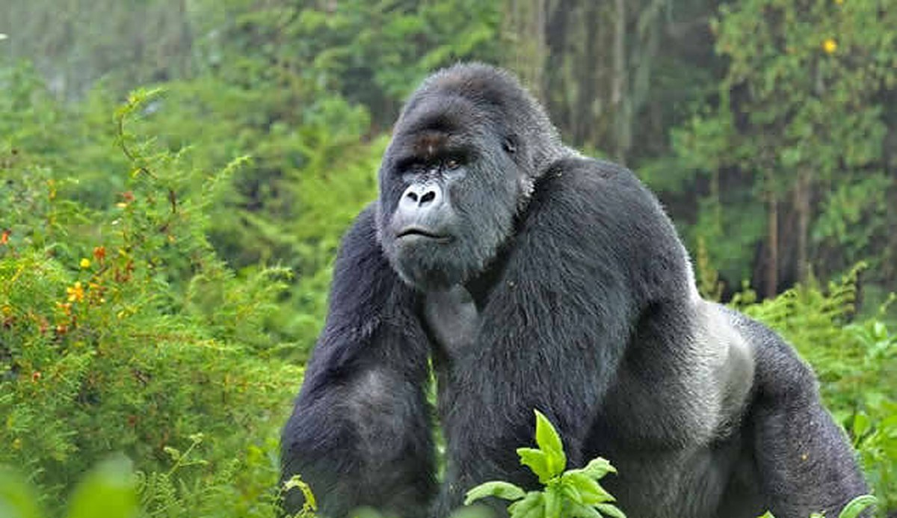

Photograph: Onyango George / EA Hospitality Pulse
Uganda has cut the gorilla permit price in April, May and November. May was its busiest month of the year.
A short table in Uganda Wildlife Authority's January 2027 tariff knocks 200 dollars off a gorilla permit in three named months. The Ministry of Tourism's own half-year statistics show one of those months was the single busiest for arrivals, while half the permit book went unsold all year. The discount is keyed to the calendar, and the problem is not calendar-shaped.
Some time in October, a price list appeared in the upload directory of Uganda Wildlife Authority's website. It arrived without a press conference, and it reads like what it is: a working document. There is no foreword, no covering letter, and, remarkably for a schedule of charges, no effective-date clause anywhere in it. There is only a title, Conservation Tariff JANUARY 2027 - JUNE 2028, and then page after page of tables.
Deep inside, past the entrance fees and the sport-fishing permits and the rate for a boat on the Kazinga Channel, sits a short table headed LOW SEASON RATES FOR GORILLA AND CHIMPANZEE TRACKING. Two rows, four figures. A gorilla permit at 600 dollars for a foreign non-resident instead of 800, and 500 for a foreign resident instead of 700. A chimpanzee permit at 200 instead of 250, and 150 instead of 200. Beneath it, in capitals, the only condition attached to any of it: low season rates will apply only for the months of April, May and November.
For anyone who sells Uganda, that table is the most consequential thing the authority has published in two years. It is the first time a discount on the country's flagship wildlife product has been written into the standing tariff rather than circulated as a promotion and withdrawn when the promotion ended. The previous schedule, Conservation Tariff July 2024 to June 2026, contains no low-season table at all. Its only concessions are a fifth off entrance at Kibale for groups above twenty and half off for students and research volunteers. A 200 dollar reduction on the single highest-yield line item in Ugandan tourism, made permanent and carried through to the middle of 2028, is a different kind of decision.
It is also, on the evidence of Uganda's own statistics, aimed at the wrong months.
The Ministry of Tourism, Wildlife and Antiquities published its half-year report for January to June 2026 with the monthly arrivals broken out. January brought 136,251 visitors. February brought 139,642. March brought 139,249. April brought 133,620. May brought 140,052. May was not the quietest month of the half year. It was the busiest, ahead of February and March, and April sat within five per cent of it. The collapse in the period came in June, at 105,001, down about a fifth on June 2025, which the ministry itself attributes to a travel advisory issued in May. June is not in the discount window. May, the peak, is.
This is not a rounding problem. The authority has committed to selling its most expensive permit at a quarter off in a month that outperformed every other month in the first half of the year, and it has done so for eighteen months at a stretch. The scale is worth approximating carefully, because the authority has not published it. Uganda sold 17,706 gorilla permits in six months, just under three thousand a month across all visitor categories. If even half of a May's permits go to the foreign non-residents and residents the discount reaches, the forgone revenue in that single month runs into the high hundreds of thousands of dollars, and the guests generating it were largely coming anyway.
The odd part is that Uganda does have a permit problem, and the same report describes it precisely. In the first half of 2026 the country sold 17,706 gorilla tracking permits, which the ministry puts at 49.9 per cent of the permits available. Half the inventory of the most expensive wildlife experience in East Africa went unsold. Chimpanzee tracking sold 9,337 permits, 47.8 per cent of availability. The chimpanzee habituation experience sold 689, which is 31.7 per cent. And while total arrivals rose 3.7 per cent over the same period of 2025, gorilla permits sold fell 0.7 per cent. More people came to Uganda and fewer of them tracked gorillas.
That is a yield problem, not a seasonality problem. It is distributed across the whole year rather than concentrated in two rainy spells, and a discount keyed to the calendar cannot find it. A permit unsold for 14 June is as unsold as a permit unsold for 14 May, and only one of them now carries a state-sanctioned reason to be cheaper. What an authority sitting on a book that is half empty every month of the year needs is a mechanism that releases inventory as a tracking date approaches, not a rule that marks down three months in advance regardless of how they are filling. The first is revenue management. The second is a rate cut with a calendar attached.
Set against the rest of the tariff, the decision looks stranger still, because the gorilla permit is the one line in the document that did not move. At 800 dollars for a foreign non-resident it is unchanged from the July 2024 schedule, which will make it four years at the same headline number by the time the new tariff expires. Almost everything around it moved hard. Lion tracking in Queen Elizabeth National Park goes from 200 dollars to 500, a rise of 150 per cent. Chimpanzee tracking at Kyambura Gorge goes from 100 to 240. The chimpanzee habituation experience at Kibale goes from 300 to 400. The gorilla habituation experience, the four-hour version for a handful of visitors a day, goes from 1,500 to 1,800, and for foreign residents from 1,000 to 1,500, a rise of half. Even the guided walk from Buhoma to Nkuringo, a transfer on foot between two trailheads, goes from 60 dollars to 100. Park entrance fees, at 45 dollars for Murchison Falls and 40 for most of the rest, are untouched.
Read that list as an operator reads it, which is as a quotation for a client. The flagship is frozen and benchmarked against Rwanda, where a permit has long been priced at 1,500 dollars and where the comparison is made in every brochure. The items nobody benchmarks took the whole increase. A ten-day Uganda circuit that bundles a gorilla trek with Kibale chimpanzees, a habituation experience and a lion tracking morning in Queen Elizabeth picks up several hundred dollars of per-person cost while the brochure's headline figure, the permit price, is unchanged. Any operator who repriced 2027 on the strength of trade reports that gorilla permits were holding steady has under-quoted, and will discover it one invoice at a time.
Uganda has run this film before. In January 2024 the authority wrote to operators raising the gorilla permit from 700 dollars to 800 and the chimpanzee permit from 200 to 250, in a letter signed by the then executive director, Sam Mwandha, setting an effective date of 1 July 2024. Operators told the Daily Monitor that the reservations desk began charging the new rates from 23 January, a day after they received the letter. "How can someone book a 700 dollar permit and you send them an invoice for 800?" asked Felix Musinguzi of Kasinga Tours at the time. "Multiply 50 permits by the extra 100 dollars. Who's going to pay for that?" The authority's spokesman, Bashir Hangi, was unmoved. "There is nothing abrupt here," he said. "Our tariffs run for two years and the tour operators are well aware."
They do not run for two years any more. The new schedule runs eighteen months, from January 2027 to June 2028, which realigns the tariff to the government financial year and means the next revision falls due in July 2028. That is useful certainty for anyone contracting two seasons out. It is undercut by the document itself, which, unlike its predecessor, states neither when it begins nor what it supersedes. The predecessor at least said plainly that tariff fees were subject to change without prior notice. The successor says nothing, and the date in its title is the only thing pointing to 1 January.
The silences matter more than usual here, because a seasonal rate creates questions a flat rate never did, and the tariff answers none of them. It does not say whether the low rate attaches to the tracking date or the booking date. It does not say what happens to a 600 dollar permit bought for 2 May and moved to 2 June. It does not say whether the discount survives a reschedule at all, although a dozen operator websites now assert flatly that low-season permits cannot be moved, a condition that appears nowhere in the published tariff. Nor does the document resolve its own contradictions. A gorilla permit for an East African citizen is UGX 300,000 in the general section and UGX 350,000 in the Bwindi section. Chimpanzee tracking at Kibale is 100 dollars for a visitor from the rest of Africa in one table and 200 in another. This is the schedule from which every quotation in the country is built.
Into that vacuum the trade has poured its own arithmetic, and a good deal of it is wrong. Comparison tables circulating on operator sites have the foreign resident habituation rate at 1,600 dollars when the tariff says 1,500, have chimpanzee tracking at Kibale rising to 300 when the tariff leaves it at 250, and have Kyambura at 200 when the tariff says 240. Each error is small, each is the difference between a margin and an apology, and all are being copied from site to site as fact.
The transmission beyond Uganda is quieter but real. Kenya sent 249,427 visitors to Uganda in the first half of 2026 and Rwanda 187,541, against 20,607 from the United States and 13,517 from the United Kingdom. The discount is denominated in the foreign-currency columns, so it reaches none of the regional majority, whose shilling rate is unchanged. It also arrives into a market where leisure is a narrow slice of a broad funnel: the ministry's survey puts visiting friends and relatives at 42.2 per cent of arrivals and holiday travel at 14.2 per cent. And it lands on a spending profile already drifting the wrong way, with the average visitor staying 8.3 nights against 7.4 a year earlier while spending 95 dollars a night against 98. Longer, cheaper trips were already eroding nightly value before the state took 200 dollars off the one line that anchors the whole itinerary.
For Kenyan and Tanzanian operators building combined circuits, the practical upshot is that the Uganda leg has changed sign depending on the month. In April, May and November the permit is 200 dollars cheaper than the standard rate, and the activities around it are dearer. In the other nine months the permit is flat and the activities are dearer. Nobody selling a 2027 itinerary can carry a single Uganda cost line any more, and nobody quoting from a trade comparison table can trust the one they have.
There is a version of this that works. A conservation agency with half its permit book unsold and a flagship price it cannot politically raise has every reason to discount, and writing the discount into the standing tariff rather than a circular is the right instinct, because operators can contract against a tariff and cannot contract against a promotion. But the discount has to find the empty inventory, and this one is pointed at May. Uganda has built the mechanism. It has aimed it at the wrong three months, priced the add-ons as though demand for them were the problem, and published the whole thing in a document that contradicts itself twice and never says when it starts.
📣 Telegram 💬 WhatsApp 💼 LinkedIn 📚 All guides